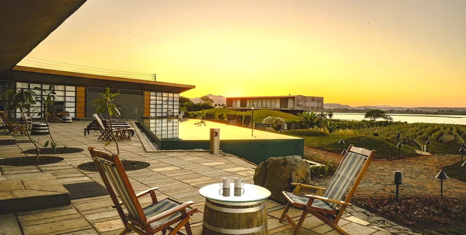
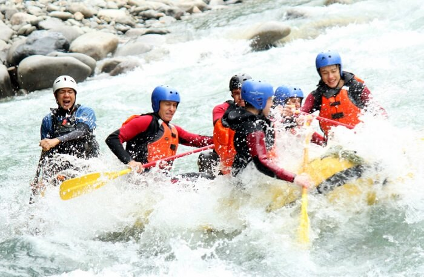
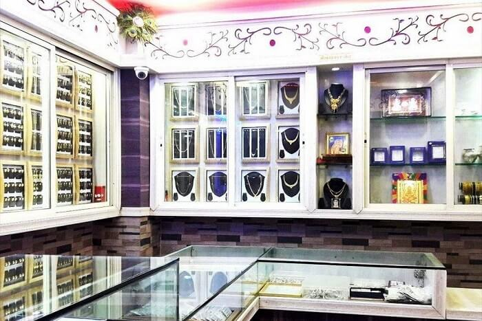
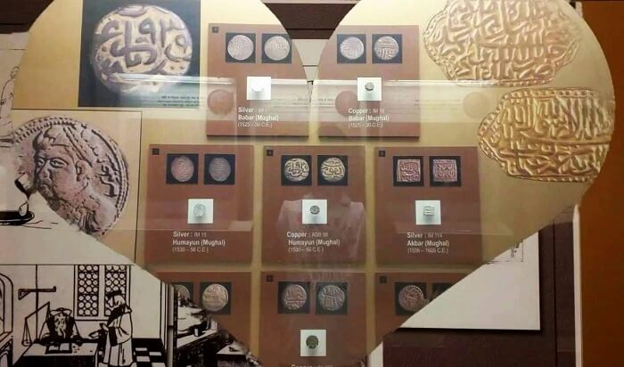

About Nashik
The District has great mythological background. Lord Rama lived in Panchvati during his vanvas. Agasti Rushi also stayed
in Nashik for Tapasya. The Godavari river originates from Trimbakeshwar in Nashik. One of the 12 Jyotirlingas also at
Trimbakeshwar. Nashik has to its credit many well known and towering personalities like Veer Sawarkar, Anant Kanhere , Rev.
Tilak, Dadasaheb Potnis, Babubhai Rathi, V.V. Shirwadkar and Vasant Kanetkar just name few. Nashik is also known as Mini
Maharashtra, because the climate and soil conditions of Surgana, Peth, Igatpuri resembles with Konkan. Niphad, Sinnar,
Dindori, Baglan blocks are like Western Maharashtra and yeola, Nandgaon, Chandwad blocks are like Vidarbha Region. Nashik,
Malegaon, Manmad, Igatpuri are some of the big cities situated in the Nashik District. Situated on the banks of Godavari
river , Nashik is best known for Hindu pilgrimage site, that of Kumbhmela which is held every 12 years. It is the forth
largest city of Maharashtra. Nashik is also known as Wine capital of India
. The main occupation of people living in
Nashik is farming, specially grapes farming takes place in Nashik. Several big companies like Mahindra and Mahindra, ABB,
Bosch, Ceat and many farmers-producers companies also have their units in Nashik.
More in Nashik
   There are much more activities to do in Nashik. You can plan a trip to Sula wineyards to taste different types of wines and see wine farming. For shopping, the Shalimar, Ravivar karanja, Deolali camp and main road market are the most popular markets. To shop jwellary, saraf bajar is famous. There are many adventure parks for delightful vacations. Tf you are a great foody, then you must visit collage road area and taste Nashik speacial menus.
Share on
 |
 |
 |
 |
 |